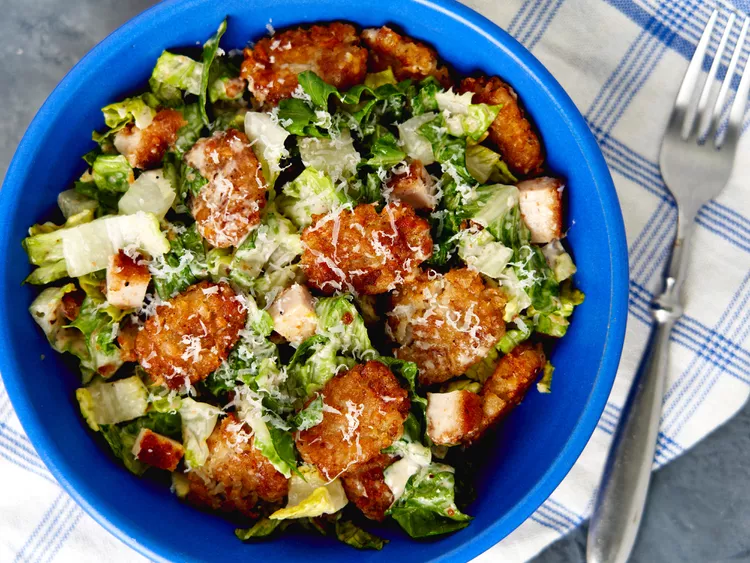

Crispy Tater Caesar Salad
Disclaimer: this is only an exercise in
creating a webpage. All content belongs to
All Recipes
and you can find the original recipe
here.

Description
This crispy tater Caesar salad is for you if you love fries
in a salad. Crispy smashed tater tot croutons, a
doctored-up bottled Caesar dressing, and crispy chicken
cutlets join Romaine lettuce and Parmesan in this meal in
a bowl.
| Prep time: |
10 mins |
| Cook time: |
45 mins |
| Cool time: |
5 mins |
| Total time: |
1 hour |
| Servings: |
4 |
Ingredients
- 230 g frozen crispy chicken cutlets
- Cooking spray
- 2.5 cups frozen bite-sized potato nuggets
- 2 ounces Parmesan cheese, freshly grated with a
Microplane, divided, plus more for garnish
(about 1 cup)
- 1 cup Caesar dressing
- 1 teaspoon fresh lemon zest
- 1 teaspoon anchovy paste
- ½ teaspoon freshly ground black pepper, divided
- ¼ teaspoon kosher salt
- 4 cups finely chopped Romaine lettuce
- 1 tablespoon white balsamic vinegar
Directions
- Preheat the oven to 220 degrees C. Set 2 shelves
near the center of the oven. Spray a baking pan
with cooking spray; place frozen chicken filets
on the pan.
- Bake in the preheated oven on the lower-center
shelf until hot and crisp, about 20 minutes,
turning filets over halfway through heating
time. When cool enough to handle, cut filets
into bite-sized pieces.
- Meanwhile, line a large rimmed baking sheet
with parchment paper, and add tater tots in
an even layer.
- Bake on upper-center shelf in the preheated
oven until tots are soft and slightly baked,
8 to 10 minutes. Remove from oven. Spray
cooking spray on the bottom of a cup. Smash
each tater tot into a flat disk with cup.
- Return to the oven; bake until golden brown
and crispy, 15 to 20 minutes. Remove from
oven again, and sprinkle with 1/2 cup
Parmesan cheese.
- Bake again until cheese is melted, about
1 minute. Set aside to cool, about 5 minutes.
- Meanwhile, whisk Caesar dressing, lemon juice,
anchovy paste, garlic, 1/4 teaspoon black pepper,
and salt together in a bowl until smooth.
- Toss together lettuce, chicken, remaining 1/2 cup
Parmesan cheese and remaining 1/4 teaspoon black
pepper until well combined. Pour half the dressing
into salad mix and toss until evenly coated. Add
cooled tater tots and toss until well combined.
- Transfer to a serving platter, drizzle with white
balsamic vinegar, and garnish with more Parmesan
cheese. Serve immediately.